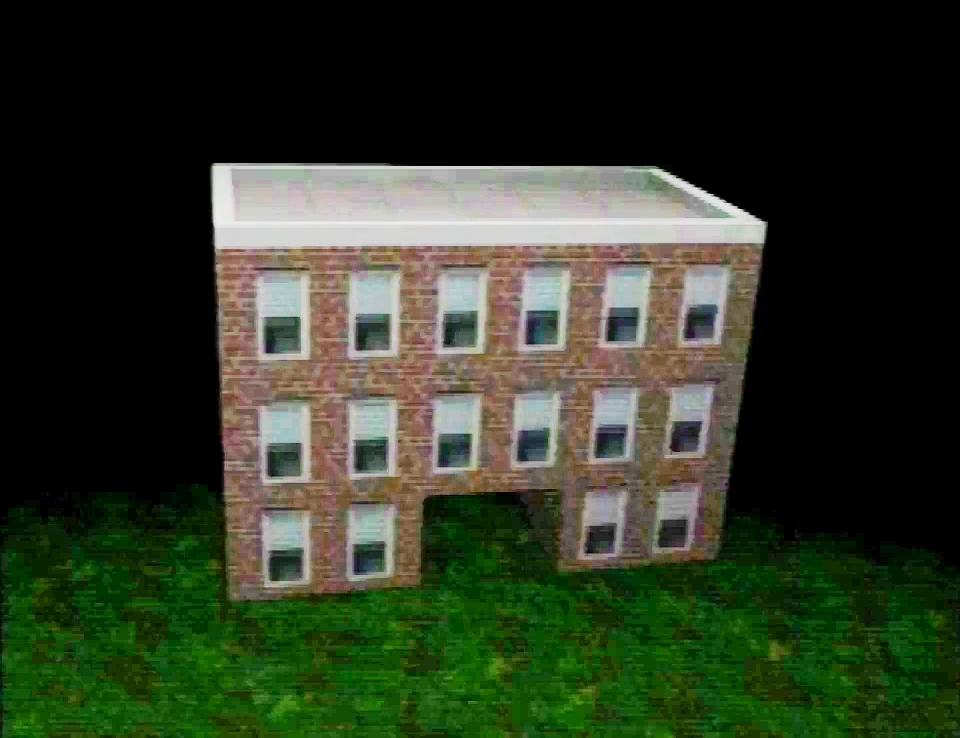

School

Image of the school (brightened)
The school is a location first seen, but not named, in Petscop 2, and first mentioned by name by Marvin during Petscop 6, who spells out "WHERE IS THE SCHOOL" in letter blocks. The school is shown in a recording shown in Petscop 11, when the player explores it. It is located on the Newmaker Plane, though its precise location is unknown.
When Paul asks the red tool "where is the school?", it responds "You can't go back in time". The school is additionally mentioned by the pink tool in Petscop 7, who states that Marvin "ALSO WANTS 1000 PIECES FOR “MACHINE BEYOND SCHOOL BASEMENT STAIRWAY"". The note in Care's room in the Child Library briefly mentions "A young person walks into your school building".
Most of the school is navigated in a first-person perspective, unlike the rest of the game; several visual bugs appear due to this. However, some rooms in the school return the player to the third-person perspective. The school's interior is filled with lockers and several doors. The green tool, Marvin, and the Needles Piano are encountered in the school, as is a locker secured with a padlock.
Outside the school
The exterior of the school is seen in Petscop 11, Petscop 22, and Petscop 23. A bench is located outside the school's entrance.
")
Inside the school
First floor
The first floor is first explored during the recording shown in Petscop 11.
Numerous lockers are placed against several of the walls, one of which has an intractable padlock, which will make the locker it's attached open if the correct code is used.
The first floor also contains an office where the Needles Piano can be played. This office has a chalkboard, which will display the notes produced by the Needles Piano, using a small house icon for C notes.
Additionally, there are 50 pieces to be collected on the first floor.
")
Locker
One of the only interactive objects on the first floor itself is a specific locker, which is at the other end of the same wall that the first-floor classroom door is on. It is unique from the other lockers in that it has an interactive single-dial combination padlock, which shakes with a jingle when the player moves close enough to use it.
Interacting with the lock brings up a view of the lock which can be turned. This is first shown in Petscop 11. The green tool can be activated simultaneously while operating the lock, but this does nothing of significance.
In Petscop 23, Tiara uses Draw Mode to write the combination for the lock on a chalkboard for Pall: 9 2 19. Pall goes to unlock the locker with this combination, in which he finds an egg and a letter. The letter contains the following text:
Your New Life Letter
The Name: TIARA LESKOWITZ
Your Message:
You are off to school today. I will miss you. I love you so much. I miss you so much when you are off to school for the day. I will be waiting for you when you come home. I will be on a lawn chair in the driveway waiting for the bus to drop you off. Every day I am so happy to see you come home and tell me what you learned. I hope everybody treats you with love and respect.
Love you forever NO MATTER WHAT.
MOMMY
Later in the episode, after the failed rebirthing of Care B resulted in a different egg, Pall returns to the locker and puts the new egg into the locker with the other egg. The locker is then closed.
.png (124 KB)")
Second floor
The second floor is accessible via stairs on the first and third floors. It is first explored in Petscop 15.
While moving around on the second floor, the player may abruptly be pulled back to a specific location in front of an image of a girl, making it difficult to navigate this floor. The girl in the image is wearing a green hat, resembling the one worn by Amber. The image also appears in a loading screen during Petscop 11.
While the player is being pulled to this location, the guardian is temporarily replaced by an earlier iteration of the sprite.
During Petscop 15, the girl image acts as a solid wall, and approaching it causes the word "girl" (stylized as "GiRL" with rotating, multicolored letters) appears in front of the image, and the track "girl-world" begins to play. The texture for the girl image is visible in Draw Mode later in the episode.
During Petscop 22 however, the player is able to walk through it and enter another room, in which several text boxes appear, and the player is able to choose a board game to play.
The second floor also contains a small classroom with four desks and a chalkboard.
Third floor
The third floor is explored during Petscop 23. It contains eight closed doors, each with a number on top, and a desk in front of them. The desks each have a Tarnacop machine on top, with the monitor displaying the Garalina logo rotating counter-clockwise, with the exception of the seventh one, which depicts the windmill interior.
In front of the seventh door is a large model which resembles a blue cone piece in shape, surrounded by several regular blue cone pieces. The player may use the green tool to interact with the piece model, which causes the screen to fade to black, and adds 26 pieces to their piece counter. Afterwards, the game fades back in, but the room is significantly darker, and the Tarnacop machines are powered off.
In the center of the room is an AV cart which has a PlayStation and a monitor on top. The monitor displays a still image of the Book of Baby Names.
Letters are written on the center of the floor, arranged alphabetically. The letter O is missing, and the large piece model appears on top of where the letter O would be placed if it was present. After the letter Z, several other symbols appear.
The third floor also contains a classroom with nine desks, a chalkboard and images of eight rooms, numbered like the doors in the previous room.
The chalkboard has illegible red writing on it, which is censored once the camera moves to provide a closer view.
The images are arranged like the doors in the previous room. Interacting with them will allow the player to view the image more closely. Notably, room 1's layout matches with the layout depicted by the Burn-in Monitor.
")
")
Basement
The school basement is an area located underneath the school. First mentioned in Petscop 7, it was first visited during Petscop 22, and was explored further in Petscop 23.
Central room
This room is the first area of the basement. It appears similar to the Newmaker Plane cellar room, judging by the texture on the walls and floor. To the left of the room, there is a closed door.
Upon first entering the room, the player is greeted by a sign that reads:
You'll find the machine up ahead.
This is the only entry or exist. You will pass through this room again as you leave.
Keep in mind: everything here, your baby will see.
There are multiple objects scattered around the room, which the player is able to push into a hole. A box of crayons, a container of Play-Doh, a model in the shape of the school, a traffic cone, and a framed photo of a child. After pushing several of the objects down the hole, the door on the left of the room opens, where Care B is located.
Machine
The machine room is accessible only by going through the previous room. The entire room is covered in red checkered tiles. Upon first entering the machine room, Marvin stands next to the entrance and Tiara stands to the left of the Machine.
The machine is first mentioned by Marvin in Petscop 7, in which Paul is told by pink tool that Marvin wants 1000 pieces for the machine. The machine looks and functions similar to the child deposit found outside the Child Library.
Behind the machine, there are dark green checkered cylinders that move at certain intervals. On the left and right of the machine, there are floating pieces. In Petscop 23, when the player walks up to one of the floating piece pillars, 500 pieces are taken from the piece counter.
After that, the player is required to deposit Care B into the machine. After playing the Needles Piano as requested by Marvin, the machine is rotated again, revealing an egg.
")
{kind=link}
{kind=link}
{kind=link}
{kind=link}
{kind=link}
{kind=link}
{kind=link}
{kind=link}
{kind=link}
{kind=link}
{kind=link}
{kind=link}
{kind=link}
{kind=link}
Theories
While the precise location of the school is unknown, there are some events that suggest its possible location in game, or how to access it. The exterior of the school may be close to the cellar door on the Newmaker Plane, as possibly suggested by Marvin's movements in Petscop 12 (see Synchronized events). In Petscop 11, after the camera moves along the tunnel for over an hour, the player appears in front of the schooll; this may be the intended way to access the school. With this in mind, the Room Impulse section of Petscop 22 may have continued from where Petscop 17 ended.
The box of crayons in the basement could be a reference to Care, as a similar box of crayons is atop the table in her room in the Child Library, and Care B is found in this area.
The last line of the basement sign, "everything here, your baby will see," could also be a reference to Care, as Marvin says "Put Baby" in reference to Care. The meaning of the line is unknown, though, as there is very little to see in the area.
The photo of the child in the basement appears to be real. Tony, the creator of the series, has mentioned on Twitter that the "Care says" clips were actually from recordings of him as a child[1], so the photo may have a similar source.
The sounds made by the conical object on the third floor are called "boss sound" in the video's official subtitles. The model may represent Lina, as she is also referred to as "boss" when her name is spoken using P2 to TALK at the end of the soundtrack.
References
| Gift Plane | Gift Plane · Even Care · Odd Care · Work Zone |
|---|---|
| Newmaker Plane | Newmaker Plane · Office · Grave room · Tool room · Quitter's Room · Child Library · Windmill · Party room · House · School |